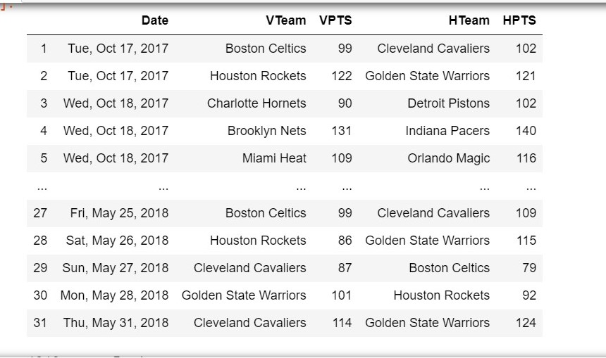

During my Senior year I combined my love for Basketball and Data Science to build a machine learning model to predict the winner of NBA basketball games. I coded the project in Python and used a number of Python packages including Pandas, NumPy, and Sklearn to store and model my data.
| Phase | Description | Images |
|---|---|---|
| Data Collection | The data I used for this model was a vast collection of simple and advanced team statistics for all 30 NBA teams from 1990 to current day. I used the BeatifulSoup Python package to build by own web scraper that scraped all the statistics in efficient manner from sportsreference.com. The data was then stored in Pandas Data Frames and exported into local .csv files. | Technologies Used: Python, BeautifulSoup, Pandas, NumPy, Scikit-learn, AdaBoost, Decision Trees, Bagging Ensamble, Stratified K-fold, HTML |
| Data Cleaning | After gathering my data into DataFrames, I had to clean my data into manipulatable formats for my model. This included changing the data types of various statistics, concatenating game results from monthly tables into full season tables, eliminating playoff games, etc. Then, I built my own functions to calculate certain statistics that weren't included in the original data. For example I converted game dates into date-time format and calculated the number of days rest each team had going into a game. | |
| Data Modeling | Once all the data was collected, cleaned and reformatted, I built a stratified K-fold evaluator to partition my data into training and testing sets. For all my models, predictions were made on single games, where the model inputs were all team and opponent statistics for the two teams involved in the game during the season the game took place. The output for the prediction funcions for each model was binary: 1 if the home team is predicted to win, and 0 if the away team should win. I used the Sklearn decision tree classifier as a baseline weak learner, and the Random Forest ensamble. Additionally I built my own Bagging and AdaBoost ensamble methods. |  |
| Results | After running all four machine learning algoriths with various combinations of input features and numbers of K-fold partitions, the resulting predictions were shockingly accurate. The best performing model was the Random Forest ensamble, correctly predicting the winner of every game since 1990 with a mean accuracy of 69.3216% over a 4-fold partition. My bagging ensamble also performed well with a mean accuracy of 69.2%. |